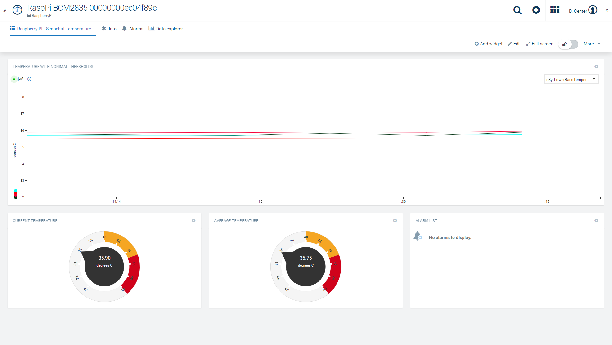

In this demo, Apama 10.3 is being used to read data from a Raspberry Pi fitted with a Sensehat. Apama is running a python plugin which is reading the temperature from the Sensehat.
The temperature data is being converted into Cumulocity Measurement events and is then sent to the Cumulocity tenant.
The Temperature data is also being converted into a Industry Analytics Kit Data event which is being fed through a ‘Spike’ Analytic to generate
Moving Average, UpperBand and LowerBand for the temperature value. This additional data is being converted into Measurement events which are sent to Cumulocity.
Download and install the latest Raspian image from https://downloads.raspberrypi.org/raspbian_full_latest
Download and install the Cumulocity Agent for the Raspberry Pi. This is available from https://cumulocity.com/guides/devices/raspberry-pi/
Download and install the “Apama Community Edition” from “https://downloads.apamacommunity.com/apama-core/10.3.0.2/apama_core_10.3.0.2_armv7_linux.tar.gz”
Download and install the Cumulocity Transport for Apama from https://downloads.apamacommunity.com/apama-core/10.3.0.2/apama_cumulocity_transport_10.3.0.2.zip
As Apama requires Python3.6, this will need to be downloaded and built before a python plugin can be used inside Apama. The instructions for this are available from https://github.com/kpalf/ApamaSenseHat/tree/master/HelloWorld (See section “Building and setting up Python 3.6”)
Download the ApamaRaspPiPythonPluginCumulocity code from github and install onto your Raspberry Pi.
Once the “RaspberryPiPythonPlugin” code has been unzipped, you will need to make a few configuration changes to ensure that it is sending the Sensehat Temperature data to the correct device inside your Cumulocity tenant.
Cumulocity Client Configuration
The Cumulocity connection settings are stored in :
\RaspberryPiPythonPlugin\config\connectivity\CumulocityClient9.0+\CumulocityIoT.properties
Edit the “CumulocityIoT.properties” file. This file will need to be updated with the tenant, username, password and appkey for your Cumulocity tenant
Find the managedObjectId for your Cumulocity device
Once you have installed the Cumulocity Agent onto your Raspberry pi and have registered the device with your Cumulocity tenant, it will be allocated a unique managedObjectId. To find this id, log into your Cumulocity tenant and locate your device inside ‘DEVICE MANAGEMENT’. In the ‘Info’, tab, the managedObjectId is displayed in the ‘DEVICE DATA’ section as the ‘ID’
Update the demo with your managedObjectId for your device
To update the code to your managedObjectId, open “\RaspberryPiPythonPlugin\monitors\RaspberryPi.mon”
Search for “constant string managedObjectId :=”
Ensure that the managedObjectId you found above is updated here
To run the demo